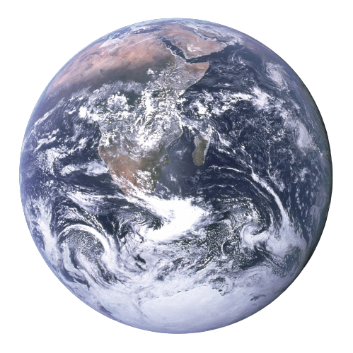
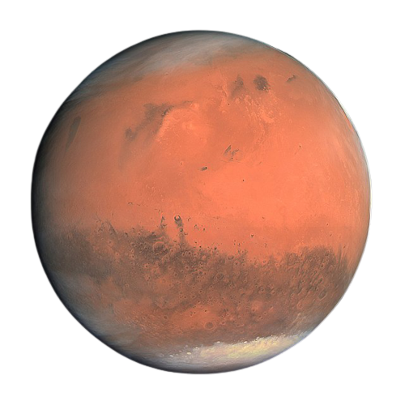
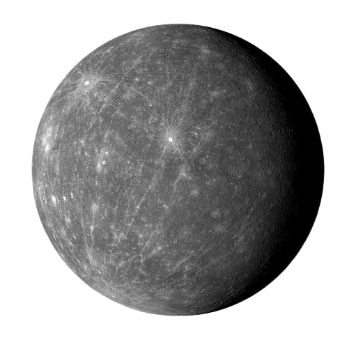
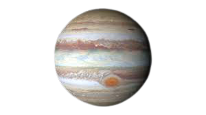
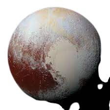
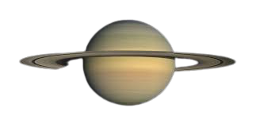
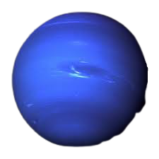
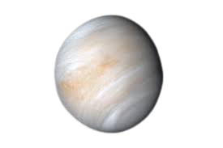

Oxygen, silicon, aluminum, and iron account for 88.1% of the mass of the Earth’s crust, while another 90 elements make up the remaining 11.9%.

It is made up primarily of silicon, oxygen, iron, and magnesium and probably has the consistency of soft rocky paste. It is probably about 770 to 1,170 miles (1,240 to 1,880 km) thick, according to NASA.

Mercury was known in Egypt and also probably in the East as early as 1500 BCE. The name mercury originated in 6th-century alchemy, in which the symbol of the planet was used to represent the metal; the chemical symbol Hg derives from the Latin hydrargyrum, “liquid silver.” Although its toxicity was recognized at an early date, its main application was for medical purposes.

The atmosphere of Jupiter essentially makes up the entire planet. The gas giant has no firm surface to touch down on. Instead, it is composed almost entirely of hydrogen and helium, with a few traces of other gases comprising a tiny percentage of its air.

Chemical composition: Pluto probably consists of a mixture of 70 percent rock and 30 percent water ice. Internal structure: The dwarf planet probably has a rocky core surrounded by a mantle of water ice, with more exotic ices such as methane, carbon monoxide and nitrogen ice coating the surface.

Saturn is approximately 75% hydrogen and 25% helium with traces of other substances like methane and water ice. Saturn's atmosphere, although similar to Jupiter's, is much less interesting to look at from a distance.

Neptune's atmosphere is made up mostly of hydrogen and helium with just a little bit of methane. Neptune's neighbor Uranus is a blue-green color due to such atmospheric methane, but Neptune is a more vivid, brighter blue, so there must be an unknown component that causes the more intense color.

Accurate measurements of the atmospheric composition showed that it was about 96 percent carbon dioxide, 4 percent nitrogen, with small amounts of water, oxygen, and sulfur compounds. Rare gases such as argon and neon detected in the atmosphere suggest that Venus is richer in volatile elements than the Earth or Mars.